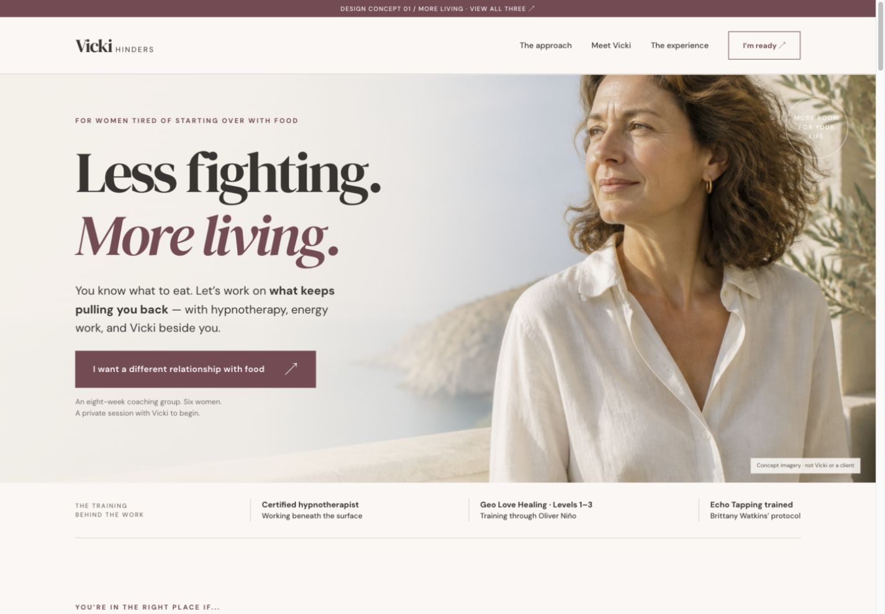
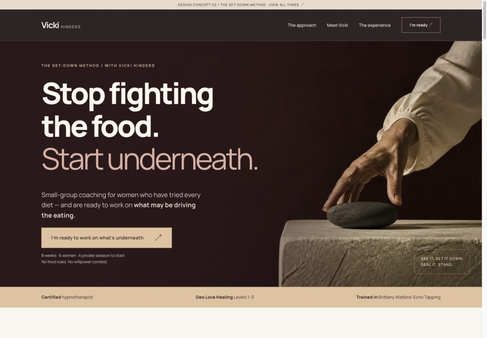
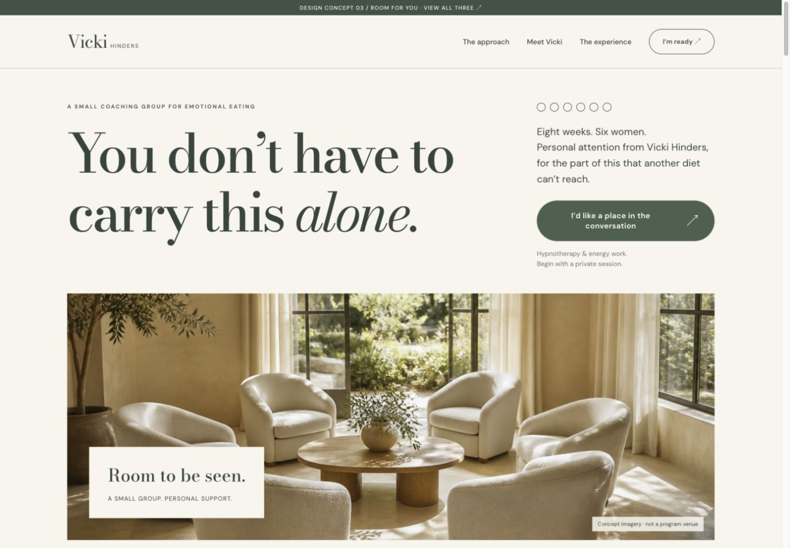

A coaching business she can see herself in
The same personal work.
A much bigger sense of possibility.
Three fully designed coaching pages. Each has its own art direction, photography, layout, and selling rhythm. Start with More Living—my recommendation.

RecommendedLess fighting.
More living.
More Living
Warm, confident, and aspirational. A photographic opening, expressive type, and a personal offer that feels like it belongs to an established coach.
Open the full page ↗
Stop fighting
the food.
The Set-Down Method
A bold, direct-response page with cinematic imagery, a clear mechanism, tangible program presentation, and a strong invitation to apply.
Open the full page ↗
Room to
be seen.
Room for You
An intimate, refined coaching experience. A personal letter, six-woman group framing, natural materials, and a spacious invitation to begin.
Open the full page ↗Design mockups—not a launched offer. All photographs are original AI-generated concept imagery, not Vicki, actual clients, or a program venue. Application buttons open a preview and send nothing. Vicki’s photo and final offer details still need approval.
References & design choices ↗